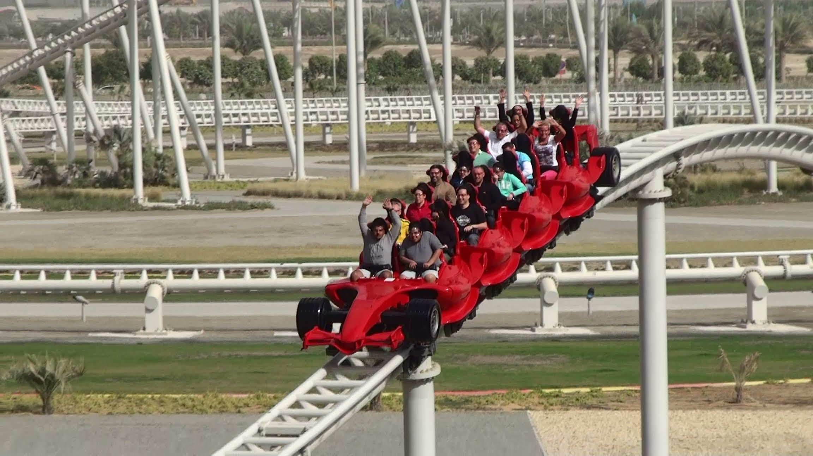
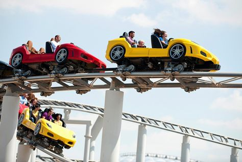
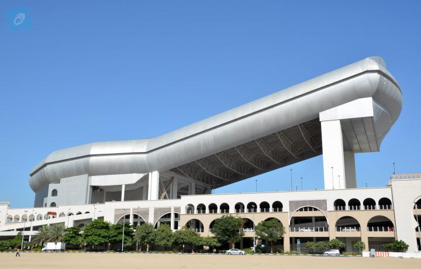

The UAE is a major tourist attraction. Its most popular attraction is the city of Dubai as a whole. The city contains multiple skyscrapers and luxury hotels. The most notable hotel is the Burj al Arab

The Burj al Arab is a five-star hotel with luxury accomodations. It sits right on the water off the coast of Dubai. The hotel boasts many unique ammenities, including an option to arrive via helicopter. I created a fake booking on the website linked at the end of this paragraph. I asked for rates for two people in July, 2017 (I was "booking" this in December, 2016) I made it one room, from Sunday to Saturday, and looked for the best rate. $7,992.07. That was the best rate I found. That's for the whole room. That is how expensive this luxury hotel is. It has pools and personal butlers and is basically entirely composed of suites. Burj al Arab: Official Website
Dubai is also home to the world's tallest building: the Burj Khalifa.

The Burj Khalifa is, technically speaking, the world's tallest man-made structure. It stands over 160 stories tall in the Dubai Skyline. The building has observation decks on floors 148, 125, and 124. On the very top of the building is a transmissions spire. While Dubai as a city is recovering from an ecconomic crisis, the Burj Khalifa still remains a large draw for tourists around the world. The main requirement for this is not to be afraid of heights. I mean, it is pretty big......
Burj Khalifa: Home PageAbu Dhabi, the capital of the UAE, is famous for its indoor amusement park known as Ferrari World.

The park, if seen from above, looks like a giant warped triangle with the Ferrari logo on it. The entire park is, as suggested by the name, themed to Ferrari, the car company. It has specialized rides for the company, as well as a comedy show with two goofballs changing a tire. Ferrari World is most famous, however, for boasting the fastest roller coaster in the world.
The name of this coaster is: Formula Rossa. Manufactured by the Swiss Company Intamin, it can reach speeds of up to 149mph. It attains such speed through a high-speed launch. A mechanism is attached to the underside of the train, and it pulls it forward via a high-speed winch. Eventually, the train detaches from the launch mechanism, and physics take over until the train hits the final brake run. Because of its intense speed, all riders are required to wear specialized protective goggles, regardless of if they already wear glasses. Additionally, the park asks riders not to ride the coaster twice in a span of 15 minutes or less. Formula Rossa draws enthusiasts from all over the world to ride this landmark attraction, boosting the park's popularity.

The park, besides Formula Rossa, has many other attractions. It has a dark ride where you pursue a video game who stole, get this, keys to a Ferrari. There's another ride like that where you help a mouse win a race. The park also has a documentary about the founder of the company, Enzo Ferrari. Finally, it has two other roller coasters: Fiorano GT Challenge and Flying Aces
Fiorano GT Challenge, pictured above, is a Maurer launched racing coaster. It is currently the only one of its kind in existance, and is oriented mainly towards families. The two trains can each seat up to twelve people and run simultaneously on racing courses.

Flying Aces, pictures above, is an Intamin Wing Coaster. It holds the record for the world's largest non-inverting loop. Despite Formula Rossa being many times faster, many consider Flying Aces the most intense attraction at the park. It is very recent, having been built in 2016.
Ferrari World Home PageThe park, in the coming years, is adding two new attractions. The first is an Intamin shuttle coaster. This means that, on the same track, the coaster will go both forwards and backwards. It is called Vortex, and will open in 2017 with Mission Ferrari. Mission Ferrari is a Dynamic Attractions dark ride/roller coaster. It combines outdoor roller coaster elements with indoor dark ride effects. It operates similarly to the Gringotts ride at Universal Islands of Adventure in Florida.

Right next door to Ferrari World is Wild Wadi, pictured above and below. Wild Wadi is an outdoor water park located right beside the Burj al Arab hotel. It is home to many great water slides, and is located by a beach hotel as well. Tantrum Alley, one of many water slides, features three elements where the ride raft goes up and down the sides of a funnel before continuing on the slide. It is pretty famous for this feature. The most recent water slide is the Jumeirah Sceirah. The water slide starts with a trapdoor capsule, meaning you are standing upright until the floor drops out from under you and you plunge into the water slide. It is very thrilling and popular.
Wild Wadi: Home Page

I forgot to mention earlier, Dubai is home to an indoor skiing area, known as Ski Dubai. The area consists of 22,500 square meters of snow with five different runs. The place is open year-round, and they have a live Penguin March several times a day. They use real, actual penguins, not just a bunch of actors in costumes. Skiing and snowboarding are allowed, and there's also a zipline too.
Ski Dubai Home Page Dubai also has, right near the Burj al Arab, a place called the Palm Islands. The Palm Islands are currently under construction but nearing full completion. They are a set of three artificial islands designed as residential living places. They have beautiful landscaping and architecture. The three Palm Islands are artificially built, kind of like the ancient Aztec city of Tenochtitlan.